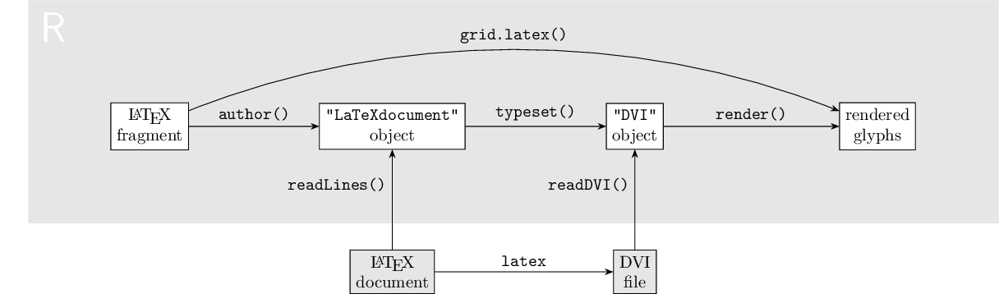

http://orcid.org/0000-0002-3224-8858
http://orcid.org/0000-0002-3224-8858
by Paul Murrell
http://orcid.org/0000-0002-3224-8858
Version 1: Thursday 06 March 2025

This document
by Paul
Murrell is licensed under a Creative
Commons Attribution 4.0 International License.
This document describes some lower-level, technical details of the CRAN package 'xdvir' for rendering LaTeX fragments as labels and annotations on R plots.
The 'xdvir' package for R (Murrell, 2025) allows LaTeX fragments to be used as labels and annotations on R plots, including 'ggplot2' plots. The package vignette describes basic high-level usage and an article submitted to the R Journal explains more about the standard usage of the package and has more complex examples. The purpose of this document is to provide a description of some more advanced features of the package, including ways to extend the package, and to provide a record of the lower-level design and implementation of the package.
The package startup detects and reports on which TeX engines are available on the current system. This report is built on a system with XeTeX and an acceptable version of LuaTeX, so both of those engines are available. This means that the default engine for building this report is LuaTeX.
library(xdvir)
getOption("xdvir.engine")$name
[1] "LuaTeX"
Rendering a LaTeX fragment in R involves three steps:
This document begins by taking a closer look at each of those three steps.

The author() function turns a LaTeX fragment into
a LaTeX document. This consists of adding additional
LaTeX code around the LaTeX fragment.
fragment <- "test" author(fragment)
%% R package xdvir_0.1.2; engine name: LuaTeX; engine version: This is LuaTeX, Version 1.17.0 (TeX Live 2023/Debian); packages:
\documentclass[varwidth]{standalone}
\usepackage{unicode-math}
\begin{document}
test
\end{document}
There are some obvious additions, like \begin{document} and
\end{document}.
The \documentclass is always
standalone. This is partly because that seems sensible - the
LaTeX fragments are not complete documents, but typically small labels to be
added to other drawing - but also because that will not produce, for
example, any page numbering or headers and footers that you normally
get from something like the standard article class.
The varwidth option is set for the standalone
class. This is not always necessary and it may actually cause
problems if the width of the label exceeds the text width of
a standard article. However, the width argument
to author() can be used to specify an explicit width
if that is convenient and/or if that is necessary.
This uses the varwidth option to set an explicit width.
If given, the width is interpreted as a number of inches.
author(fragment, width=2)
%% R package xdvir_0.1.2; engine name: LuaTeX; engine version: This is LuaTeX, Version 1.17.0 (TeX Live 2023/Debian); packages:
\documentclass[varwidth=2in]{standalone}
\usepackage{unicode-math}
\begin{document}
test
\end{document}
The \usepackage{unicode-math} is there to force the TeX engine
to use TrueType math fonts and to produce font file paths in DVI output.
Without this, you tend to get fnt_def operations in the DVI
output of the form cmmi10. Those not only require
a potentially complicated further mapping to get to
actual font files, but they resolve to Type 1 fonts. That is a problem
because the rendering of LaTeX fragments in R
requires a graphics device that has
support for rendering glyphs
and the main set of those is the Cairo devices and they
no longer support Type 1 fonts.
The comment on the first line records information about the version of 'xdvir', the TeX engine that was used to author the document, and the LaTeX packages that were specified. As noted previously, the engine defaults on package startup. This information is used in the typesetting step to check that compatible TeX engines and packages were used in the authoring step.
We can use the engine and
packages arguments to author() to explicitly set
those values. Notice that the addition of packages="xcolor"
adds a new
\usepackage line and it adds to
the comment on the first line.
The engine just turns up in the first line of comments.
author(fragment, engine="xetex", packages="xcolor")
%% R package xdvir_0.1.2; engine name: XeTeX; engine version: XeTeX 3.141592653-2.6-0.999995 (TeX Live 2023/Debian); packages: xcolor
\documentclass[varwidth]{standalone}
\usepackage{unicode-math}
\usepackage{xcolor}
\begin{document}
test
\end{document}
Some packages will add more lines. For example, the preview
package adds further LaTeX code
to the document preamble and wraps the fragment
within a preview environment.
author(fragment, packages="preview")
%% R package xdvir_0.1.2; engine name: LuaTeX; engine version: This is LuaTeX, Version 1.17.0 (TeX Live 2023/Debian); packages: preview
\documentclass[varwidth]{standalone}
\usepackage{unicode-math}
\usepackage[active,tightpage,lyx]{preview}
\makeatletter
\g@addto@macro\pr@ship@end{%
\setbox\pr@box\hbox{%
\special{xdvir-preview:: %
Snippet \number\pr@snippet\space%
\pr@bbadjust\space%
\number\ht\pr@box\space%
\number\dp\pr@box\space%
\number\wd\pr@box%
}%
\box\pr@box%
}%
}
\makeatother
\begin{document}
\begin{preview}
test
\end{preview}
\end{document}
Functions like grid.latex() and geom_latex()
also add additional code to LaTeX fragments in order to
match the current font family, font face, and font size.
We can easily see this if we use the texFile argument
to control the name of the file that 'xdvir' writes a full LaTeX
document into.
For example, the following code draws a simple LaTeX fragment
and automatically matches the R default font family (rather than
using the default LaTeX Computer Modern font)
and writes the full LaTeX document to the file "test.tex".
The font matching is implemented by adding \setmainfont and
\fontsize commands to the LaTeX document
(plus \usepackage{fontspec}).
grid.latex(fragment, texFile="test.tex")
cat(readLines("test.tex"), sep="\n")
%% R package xdvir_0.1.2; engine name: LuaTeX; engine version: This is LuaTeX, Version 1.17.0 (TeX Live 2023/Debian); packages: fontspec
\documentclass[varwidth]{standalone}
\usepackage{unicode-math}
\usepackage{fontspec}
\begin{document}
\setmainfont{NimbusSans-Regular.otf}%
[Path=/usr/share/fonts/opentype/urw-base35/,
BoldFont=NimbusSans-Bold.otf,
ItalicFont=NimbusSans-Italic.otf,
BoldItalicFont=NimbusSans-BoldItalic.otf]
\fontsize{12}{14.4}
\selectfont{}
test
\end{document}
Where user-level functions add a lot
of additional code to the LaTeX fragment, like the examples above,
there is a risk of
conflicting with the LaTeX fragment and/or a risk of
packages conflicting with each other. This is one possible
reason for authoring a LaTeX document directly rather than relying
on the author() function.
However, care must be taken in that case to retain features like
\usepackage{unicode-math} so that
DVI output that is consumable by 'xdvir'
is produced during the typesetting step.
In other words, here be dragons. On the positive side, I have yet to irretrievably bite myself with this problem.
The typeset() function processes a LaTeX document
to a "DVI" object.
The LaTeX document can be a "LaTeXdocument"
object, as produced by author()
or just a character vector (though the latter must be a complete
LaTeX document, not just a LaTeX fragment).
doc <- author(fragment) dvi <- typeset(doc) dvi
pre version=2, num=25400000, den=473628672, mag=1000,
comment=R package xdvir_0.1.2; engine name: LuaTeX; engine version: This is LuaTeX, Version 1.17.0 (TeX Live 2023/Debian); packages:
bop counters=1 0 0 0 0 0 0 0 0 0, p=-1
push
right3 b=-4736287
down3 a=-4736287
xxx1 k=26
x=header=l3backend-dvips.pro
pop
push
push
push
push
push
push
push
right3 b=-4736287
down3 a=-4333241
fnt_def_1 fontnum=15, checksum=1282761030, scale=655360, design=655360,
fontname=[/usr/share/texmf/fonts/opentype/public/lm/lmroman10-regular.otf]
fnt_num_15
set_char_105 69
set_char_50 32
set_char_98 62
set_char_105 69
pop
pop
pop
pop
pop
pop
pop
eop
post
fnt_def_1 fontnum=15, checksum=1282761030, scale=655360, design=655360,
fontname=[/usr/share/texmf/fonts/opentype/public/lm/lmroman10-regular.otf]
post_post
The typeset() function generates a DVI file by
writing the LaTeX document to a file and running a TeX engine
to produce a DVI file.
'xdvir' makes use of latexmk() from the 'tinytex'
package for this step, which automatically takes care of
multiple runs of the TeX engine and even installing missing
LaTeX packages in at least some cases.
The DVI file is read into R as a "DVI" object and
the "DVI" object has a print method to show the contents
of a DVI file in a human-readable format.
Underneath, it is a list of "rawFormat"
objects from the 'hexView' package, which are labelled blocks of
raw bytes along with interpreted values (integers, strings, etc).
For example, the first element of the dvi object
is a DVI pre
operation, which consists of a one-byte integer operation code
(247), followed by a one-byte integer DVI version number (2),
and so on.
dvi[[1]]
========op.opcode
0 : f7 | 247
========op.opparams.i
1 : 02 | 2
========op.opparams.num
2 : 01 83 92 c0 | 25400000
========op.opparams.den
6 : 1c 3b 00 00 | 473628672
========op.opparams.mag
10 : 00 00 03 e8 | 1000
========op.opparams.comment.length
14 : 7d | 125
========op.opparams.comment.string
15 : 52 20 70 61 63 6b 61 67 65 20 78 64 76 69 72 5f 30 2e 31 2e 32 | R package xdvir_0.1.2
36 : 3b 20 65 6e 67 69 6e 65 20 6e 61 6d 65 3a 20 4c 75 61 54 65 58 | ; engine name: LuaTeX
57 : 3b 20 65 6e 67 69 6e 65 20 76 65 72 73 69 6f 6e 3a 20 54 68 69 | ; engine version: Thi
78 : 73 20 69 73 20 4c 75 61 54 65 58 2c 20 56 65 72 73 69 6f 6e 20 | s is LuaTeX, Version
99 : 31 2e 31 37 2e 30 20 28 54 65 58 20 4c 69 76 65 20 32 30 32 33 | 1.17.0 (TeX Live 2023
120 : 2f 44 65 62 69 61 6e 29 3b 20 70 61 63 6b 61 67 65 73 3a 20 | /Debian); packages:
Notice that typeset() embeds a "signature" in
the pre operation of the DVI file that records
information about the 'xdvir' version, the TeX engine used,
and any LaTeX packages used. This information is used in the
rendering step
to check that compatible TeX engines and packages are used in each
step.
Warnings are given if information is missing or inconsistent.
There is an engine argument to allow the TeX engine
to be specified, but it will default from information in the
LaTeX document if that exists.
The typesetting step is probably where most user problems will occur,
most probably because the LaTeX fragment (or the LaTeX
document) contains an error, so the call to a TeX engine fails.
For example, the following code adds a $ to the
previous LaTeX fragment to produce an illegal LaTeX fragment.
bugFrag <- paste(fragment, "$") bugFrag
[1] "test $"
When we build a complete LaTeX document and attempt to typeset it, we get an error from the TeX engine.
docBug <- author(bugFrag) typeset(docBug)
Error: LaTeX failed to compile /tmp/RtmpvMacKQ/file4a7c3a250c.tex. See https://yihui.org/tinytex/r/#debugging for debugging tips. See /tmp/RtmpvMacKQ/file4a7c3a250c.log for more info.
The texFile argument is useful in cases like this because
the .log file will be in the same location as the
texFile, so we can easily see what the problem is.
Using texFile is also a good way to
easily get hold of the LaTeX document and run a TeX engine on it
outside of R to debug the problem.
'xdvir' automatically caches typsetting results. If the combination of
LaTeX document, TeX engine, and LaTeX packages has been seen before
then a cached "DVI" object will be used.
Ths means that the expensive typesetting step
should only occur once per unique TeX fragment (per session).
For debugging problems, it can be useful to turn off caching
with options(xdvir.useDVIcache=FALSE).
Because typeset() accepts a simple character vector,
it is easy to author a LaTeX document outside of R and
just readLines() that document to pass it to
typeset.
doc <- readLines("test.tex") dvi <- typeset(doc)
It is also possible to perform the typesetting outside of R and
just read a DVI file in using readDVI().
The important thing here is to make sure that you produce a DVI file, e.g.,
xelatex --no-pdf or
lualatex --output-format=dvi.
The render() function renders a "DVI"
object. This is an alias for grid.dvi() - the rendering
happens within the current 'grid' viewport.
render(dvi)
Rendering consists of two steps internally:
We walk the list of DVI operations and build a list of
objects, mostly either "XDVIRglyphObjglyph" objects,
which describe
glyphs, the fonts they come from, and where to draw them,
or "XDVIRruleObj" objects,
which correspond to rectangles to draw
(the only core TeX drawing operation).
This step also resolves font definitions and gathers bounding box information, which is vital for sizing and positioning the grobs that are produced in the second step.
We walk the list of objects and build a gTree of grobs,
mostly either "glyphgrob"s, "rect" grobs,
or "segments" grobs. Segments are used for
very thin rectangles because very thin filled rectangles
tend to disappear on raster devices, including on screen.
Consecutive glyph operations in the DVI file are collapsed into
a single "glyphgrob", but we may end up with
multiple "glyphgrob"s if, for example,
a mathematical equation includes a horizontal line.
In that case, in order to preserve the order of drawing,
we end up with a "glyphgrob" for one or more
glyphs, before a "rect" for the line, then another
"glyphgrob" for one or more further glyphs.
Justification of the rendering is complicated because we
potentially need to
justify a combination of multiple "glyphgrob"s, plus
lines and/or rectangles.
The solution is to generate common "anchors" for all
"glyphgrob"s based on the bounding box for the
rendering and to calculate an "offset" for lines and rectangles
based on how much a "dummy" glyph positioned at the bottom-left of
the bounding box would have to move to satisfy the justification.
A margin and rotation can be specified
for rendering and these are implemented via viewports on the
overall gTree.
It is possible to specify the packages and
engine for rendering, though they will be taken
from the "DVI" object if possible.
Checks are made for inconsistency between the user specification
and the signature in the "DVI" object, if there is one.
Warnings are given if information is missing or inconsistent.
It is also possible to specify a font library, which is used to get glyph metrics (for calculating glyph positions and the overall bounding box). There is a default font library based on FreeType (The FreeType Project, 2025) and no other option is provided (on CRAN). Section Font libraries has more information.
The render() function is vectorised.
The dvi argument to render() can be
a list of "DVI" objects,
which can each be drawn at different (x, y)
locations, at different rotations, and
with different hjust and vjust
justifications.
The gp settings are also vectorised and applied
to the corresponding "DVI" object.
On the other hand, the packages, engine,
and fontLib are fixed for all "DVI" objects
in a single render() call.
By default, DVI positions and font metrics are used at maximum resolution (typically 72*2^16 scaled points per inch and 72*10*1000 units per inch, where 10 is the font point size, respectively) and R uses its default naive infinite resolution calculations to position glyphs and to determine dimensions, such as the bounding box.
However, it is also possible to specify a dpi
resolution, in which case glyph locations and font dimensions
are rounded to the nearest "pixel". This uses an algorithm
that produces identical results to dvitype
(Knuth, 1995)
at multiple resolutions on an identical DVI file
(see tests/dpi.R).
Using dpi may make sense if you know the dpi of
the target graphics device, though I have yet to see convincing
evidence of improvement. This may be because the dpi
rounding does
not guarantee alignment with pixels on the device because there
are subsequent calculations on the rounded dpi locations
to satisfy justification.
It is possible for a DVI file to contain multiple pages. While this is unlikely to be the typical case for LaTeX fragments, it could still occur if a LaTeX document is generated outside of R.
In such a case, readDVI() will read all pages into
a "DVI" object, but only the operations
on the page specified to render()
will generate objects and operations on other pages will be ignored.
To be more accurate, some operations, such as positioning and setting of fonts will be listened to on all pages in case settings carry over across pages, but those operations will not generate any objects themselves.
The creation of "glyphgrob"s is delayed, in the sense
of happening within a makeContent() method,
because the calculation of anchors and offsets for justification
has to occur at drawing time, once the rendering viewport is known.
This means that grob queries, such as grobWidth()
incur a penalty because they have to generate final grobs
(though not necessarily "glyphgrob"s).
There can be a further layer of delay when calling
grid.latex() because the author step has to occur
at drawing time if the width requires converting to
inches and/or the current font has to be queried (so we need to
know the final rendering viewport).
This delay does not occur if width is not specified
and/or it is in absolute units and gp
is set to NULL (so the "current" font settings
are ignored). This additional delay results in additional
penalties for grob queries.
'xdvir' provides predefined support for several LaTeX packages: fontspec, xcolor, preview, zref, and tikz (see the TikZ Section).
There are obviously many more LaTeX packages that
users might want to make use of in their LaTeX fragments.
One approach is to write an entire LaTeX document by hand, which
means you can include whatever packages you need.
However, this is not the most convenient and will not work,
for example, with the 'ggplot2' interfaces geom_latex()
and element_latex().
So there is a mechanism for defining support for additional LaTeX packages
in the form of the LaTeXpackage() function
(plus the registerPackage() function).
The name argument provides convenience.
If the package is registered, then it can be referred to by this
name (which is what previous examples have done with predefined packages).
The preamble argument is LaTeX code that will be placed in
the LaTeX document preamble in the authoring step.
This is often just a \usepackage command, but
the preview package example earlier showed that other LaTeX
code can be included.
The prefix and suffix arguments are LaTeX code
that is wrapped around the LaTeX fragment in the authoring step.
A typical use would be to wrap the LaTeX fragment in a LaTeX
environment (like the preview package does).
The special argument is a function.
This is useful for packages that generate DVI specials, like xcolor.
The following code authors and typesets a simple LaTeX fragment
that draws text in red.
The resulting DVI output contains DVI specials, which are marked
as xxx1 operations.
These have been produced by the xcolor package
and contain information about changes in colour.
For example color push gray 0 sets the text colour
to black and color push rgb 1 0 0 sets it to red.
tex <- author("\\color{red} test", packages="xcolor") dvi <- typeset(tex) dvi
pre version=2, num=25400000, den=473628672, mag=1000,
comment=R package xdvir_0.1.2; engine name: LuaTeX; engine version: This is LuaTeX, Version 1.17.0 (TeX Live 2023/Debian); packages: xcolor
bop counters=1 0 0 0 0 0 0 0 0 0, p=-1
push
right3 b=-4736287
down3 a=-4736287
xxx1 k=26
x=header=l3backend-dvips.pro
xxx1 k=24
x=papersize=16.16pt,6.26pt
pop
push
push
push
right3 b=-4736287
down3 a=-4736287
xxx1 k=17
x=color push gray 0
right4 b=22609920
xxx1 k=9
x=color pop
pop
pop
push
right3 b=-4736287
down3 a=-4736287
xxx1 k=17
x=color push gray 0
push
push
down3 a=410255
xxx1 k=17
x=color push gray 0
push
down3 a=-41287
xxx1 k=17
x=color push gray 0
push
down3 a=-368968
xxx1 k=20
x=color push rgb 1 0 0
push
down3 a=403046
fnt_def_1 fontnum=15, checksum=1282761030, scale=655360, design=655360,
fontname=[/usr/share/texmf/fonts/opentype/public/lm/lmroman10-regular.otf]
fnt_num_15
set_char_105 69
set_char_50 32
set_char_98 62
set_char_105 69
pop
down3 a=410255
xxx1 k=9
x=color pop
pop
right3 b=1059062
xxx1 k=9
x=color pop
pop
right3 b=1059062
xxx1 k=9
x=color pop
pop
pop
pop
push
right3 b=-4736287
down3 a=-4326032
xxx1 k=17
x=color push gray 0
right4 b=22609920
xxx1 k=9
x=color pop
pop
pop
eop
post
fnt_def_1 fontnum=15, checksum=1282761030, scale=655360, design=655360,
fontname=[/usr/share/texmf/fonts/opentype/public/lm/lmroman10-regular.otf]
post_post
The rendering step calls the special function
(if not NULL) for every registered package,
providing the content of the special (e.g., color push gray 0)
as a character value, plus a state object.
The latter is just an environment that can be used to maintain
state variables during the walk of DVI operations.
For example, the special function for the xcolor
package (in 'xdvir') maintains a stack of colours
based on specials that start with color (and ignores
all other specials).
The init and final arguments are also functions
that are called at the start and end of walking the DVI operations.
These are passed a state object and allow initialisation
of state variables and anything else the package wants to do.
In summary, the LaTeXpackage() function allows the user
to specify LaTeX code that will be added to a LaTeX fragment during the
authoring step and a function to handle specials during the rendering
step that the LaTeX package
generated in DVI output during the typesetting step.
The registerPackage() function is used to
register the package with 'xdvir' so that it can be referred to by name.
The support for the tikz package in 'xdvir' is several orders of magnitude more complex than the support for other packages, so deserves its own mention.
The LaTeX package TikZ (Tantau, 2013) provides a sophisticated graphics system within the LaTeX world. It generates graphical output by producing specials in the DVI output. For example, consider the TikZ fragment below (it is constructed in a slightly odd way to avoid 'knitr' errors). This describes a simple TikZ diagram that draws an arrow from "a" to "b".
tikzFrag <- paste0(r"(\draw[->] (0, 0) node[left] {a} -)", r"(- (1, 0) node[right] {b};)") tikzFrag
[1] "\\draw[->] (0, 0) node[left] {a} -- (1, 0) node[right] {b};"
The following code augments that to a full LaTeX document,
including additional LaTeX code to load the TikZ package
and wrap the fragment within a tikzpicture
environment.
The \def\pgfsysdriver command is very important
because this provides a backend for the TikZ package
that outputs TikZ specials designed for consumption by 'xdvir'.
Without that command, TikZ would output specials consisting of
PDF commands.
This is another example of a detail that would have to be
replicated if we author a complete LaTeX document (that included
a TikZ picture) manually for use with 'xdvir'.
tikzDoc <- author(tikzFrag, packages="tikzPicture") tikzDoc
%% R package xdvir_0.1.2; engine name: LuaTeX; engine version: This is LuaTeX, Version 1.17.0 (TeX Live 2023/Debian); packages: tikzPicture
\documentclass[varwidth]{standalone}
\usepackage{unicode-math}
\def\pgfsysdriver{/usr/local/lib/R/site-library/xdvir/tikz/pgfsys-xdvir.def}
\usepackage{tikz}
\begin{document}
\begin{tikzpicture}
\draw[->] (0, 0) node[left] {a} -- (1, 0) node[right] {b};
\end{tikzpicture}
\end{document}
Typesetting this document generates a large number of special
operations in the DVI output, all starting with xdvir-tikz::
so that the special function for the tikz package in 'xdvir'
will identify them and handle them.
tikzDVI <- typeset(tikzDoc) tikzDVI
pre version=2, num=25400000, den=473628672, mag=1000,
comment=R package xdvir_0.1.2; engine name: LuaTeX; engine version: This is LuaTeX, Version 1.17.0 (TeX Live 2023/Debian); packages: tikzPicture
bop counters=1 0 0 0 0 0 0 0 0 0, p=-1
push
right3 b=-4736287
down3 a=-4736287
xxx1 k=26
x=header=l3backend-dvips.pro
xxx1 k=31
x=papersize=52.74464pt,13.71594pt
pop
push
push
push
right3 b=-4736287
down3 a=-4736287
xxx1 k=17
x=color push gray 0
right4 b=22609920
xxx1 k=9
x=color pop
pop
pop
push
right3 b=-4736287
down3 a=-4736287
xxx1 k=17
x=color push gray 0
push
push
down3 a=898888
xxx1 k=17
x=color push gray 0
push
down3 a=-285604
xxx1 k=17
x=color push gray 0
push
push
push
push
right3 b=777647
down3 a=-163840
xxx1 k=27
x=xdvir-tikz:: begin-picture;
xxx1 k=26
x=xdvir-tikz:: begin-scope;
xxx1 k=29
x=xdvir-tikz:: gs col=gray(0);
xxx1 k=30
x=xdvir-tikz:: gs fill=gray(0);
xxx1 k=27
x=xdvir-tikz:: gs lwd=0.4pt;
push
xxx1 k=26
x=xdvir-tikz:: begin-scope;
xxx1 k=23
x=xdvir-tikz:: new-path;
xxx1 k=50
x=xdvir-tikz:: moveto 0.0,0.0:lineto 27.99275,0.0:;
xxx1 k=21
x=xdvir-tikz:: stroke;
xxx1 k=26
x=xdvir-tikz:: begin-scope;
xxx1 k=53
x=xdvir-tikz:: transform 1.0,0.0,0.0,1.0,27.99275,0.0;
xxx4 k=256
x=xdvir-tikz:: begin-scope; gs lwd=0.31999pt; gs lty=none; gs lineend=round; gs linejoin=round; new-path; moveto -1.19998,1.59998:curveto -1.09998,0.99998,0.0,0.09999,0.29999,0.0:curveto 0.0,-0.09999,-1.09998,-0.99998,-1.19998,-1.59998:; stroke; end-scope;
xxx1 k=24
x=xdvir-tikz:: end-scope;
push
push
xxx1 k=26
x=xdvir-tikz:: begin-scope;
xxx1 k=26
x=xdvir-tikz:: begin-scope;
xxx1 k=56
x=xdvir-tikz:: transform 1.0,0.0,0.0,1.0,-8.53297,-2.185;
push
xxx1 k=29
x=xdvir-tikz:: gs col=gray(0);
xxx1 k=30
x=xdvir-tikz:: gs fill=gray(0);
push
fnt_def_1 fontnum=15, checksum=1282761030, scale=655360, design=655360,
fontname=[/usr/share/texmf/fonts/opentype/public/lm/lmroman10-regular.otf]
fnt_num_15
set_char_28 1c
pop
pop
xxx1 k=24
x=xdvir-tikz:: end-scope;
xxx1 k=24
x=xdvir-tikz:: end-scope;
pop
push
xxx1 k=26
x=xdvir-tikz:: begin-scope;
xxx1 k=26
x=xdvir-tikz:: begin-scope;
xxx1 k=58
x=xdvir-tikz:: transform 1.0,0.0,0.0,1.0,31.98572,-3.41501;
push
xxx1 k=29
x=xdvir-tikz:: gs col=gray(0);
xxx1 k=30
x=xdvir-tikz:: gs fill=gray(0);
push
set_char_35 23
pop
pop
xxx1 k=24
x=xdvir-tikz:: end-scope;
xxx1 k=24
x=xdvir-tikz:: end-scope;
pop
pop
xxx1 k=24
x=xdvir-tikz:: end-scope;
pop
xxx1 k=24
x=xdvir-tikz:: end-scope;
xxx1 k=68
x=xdvir-tikz:: end-picture -11.86595pt,-6.85797pt,40.8787pt,6.85797pt;
pop
pop
pop
pop
right3 b=3456673
xxx1 k=9
x=color pop
pop
right3 b=3456673
xxx1 k=9
x=color pop
pop
pop
pop
push
right3 b=-4736287
down3 a=-3837399
xxx1 k=17
x=color push gray 0
right4 b=22609920
xxx1 k=9
x=color pop
pop
pop
eop
post
fnt_def_1 fontnum=15, checksum=1282761030, scale=655360, design=655360,
fontname=[/usr/share/texmf/fonts/opentype/public/lm/lmroman10-regular.otf]
post_post
The special function for the tikz package in 'xdvir'
calls a large number of other functions to maintain a lot of
state to keep track of where drawing needs to occur.
It also generates a number of special "XDVIRtikz*"
objects (that are not glyph or rule objects that normal
DVI operations produce) and
there are functions to convert those special tikz objects into
'grid' grobs (in the second stage of the rendering step).
At the high level, all of this internal activity is hidden and we can just
call grid.latex() with the TikZ fragment and make sure to
load the tikz package support, as shown below.
grid.latex(tikzFrag, packages="tikzPicture")
The 'xdvir' package has predefined support for
the XeTeX engine and the LuaTeX engine, though it insists on
a recent version of the latter so that DVI output contains
font file paths in font definitions and glyph indices in
set_char operations.
This means that 'xdvir' cannot work with DVI output that is
generated by, for example, pdfTeX or upTeX, because those engines generate
DVI output with font definitions that require resolving more complex
font file mappings and set_char operations that
use a variety of different encodings.
The door is left ajar for future development of support for other
engines by providing the TeXengine() function
(and the registerEngine() function).
The name argument provides an easy way to refer to the
engine if it is registered with 'xdvir'.
The version argument is a function (with no arguments)
that should return the version of the engine.
This is used to construct comments in the authoring step and
signatures in the typesetting step to check for consistency
between steps.
The command is a character value that gives the
engine command (e.g., "xelatex") and options
are any additional options required to produce DVI output
(e.g., "--no-pdf").
dviSuffix gives the suffix used for DVI output files
(e.g., .xdv).
isEngine is a function that is called with a
DVI object and should return whether the engine produced that
DVI object (used to help check for consistency).
The preamble is LaTeX code that should be added
in the authoring step.
The fontFile and glyphIndex arguments
are functions called during the rendering step to
convert DVI operations into objects.
fontFile is called with the content of a DVI font definition
(as a character value) and should return a font file path.
glyphIndex is called with the content of a
set_char operation (as a set of raw bytes) and should
return an integer glyph index.
The implementation of fontFile and glyphIndex
for XeTeX and (acceptable) LuaTeX is relatively straightforward,
but these functions offer a possible path for other engine support, even if
that support may require much more complex implementations.
The 'xdvir' package relies on FreeType to access glyph
metrics (for glyph placement and for bounding box calculations).
The FreeType support is defined via an internal
FontLibrary() function that requires three functions
to return glyph metric information.
That function is not currently exported, but 'xdvir' internally
defines a different font library based on TTX
(FontTools Project, 2025), which
can be useful for debugging.
The 'xdvir' package provides a convenient high-level interface for using LaTeX fragments as plot labels and annotations in R. This document describes some of the details and internal design of the package, which may be helpful for diagnosing problems when things go wrong and possibly for extending the package.
Rendering is slow. The typesetting step requires at least one run of a TeX engine. Caching helps the second time around, but a plot that contains multiple unique TeX fragments can be glacial.
As mentioned previously, 'xdvir' only supports XeTeX and LuaTeX only if luaotfload-tool verion is > 3.15.
'xdvir' depends on R >= 4.3 because it makes use of the
glyph-rendering feature that was added in that version.
This extends to requiring a graphics device that provides
glyph-rendering, which currently includes
pdf(),
quartz(),
the Cairo-based devices such as
cairo_pdf() and
png(type="cairo"),
plus devices from the 'ragg' package (Pedersen and Shemanarev, 2024).
The PDF produced by
pdf()
does NOT embed the fonts, so viewers may show
garbage glyphs.
The embedGlyphs() function can be used
to embed glyphs, but a little effort is required to extract the
glyph information that embedGlyphs() requires
from the 'grid' gTree that rendering produces.
The 'xdvir' package is an evolution of the 'dvir' package (Murrell, 2018, Murrell, 2020b), which only exists on github. 'xdvir' has borrowed a lot of code from 'dvir' (especially for TikZ support; Murrell, 2020a), but streamlined some of the user interface, added integration with 'ggplot2', and massively simplified the handling of font definitions and glyph specifications in DVI output (by insisting that they contain font file paths and glyph indices, respectively). The 'xdvir' package also benefits from the glyph rendering support in R (from version 4.3), whereas 'dvir' had to struggle with the simplistic R text drawing of character values.
A number of R packages and other software perform a similar job to 'xdvir', but differ in various ways. The following list focuses on the negatives of these other approaches, but they almost all have the advantage of NOT having massive dependencies (like 'xdvir' does with its need for a TeX installation) and NOT being slow (like 'xdvir' is with its typesetting step).
'latex2exp' converts LaTeX (mathematical equation) fragments to R expressions, to be drawn using plotmath. This helps LaTeX users to write plotmath expressions, but the end result is plotmath, which produces an inferior result to real LaTeX. It also only supports LaTeX mathematical equations.
'tikzDevice' converts R graphics into LaTeX graphics. This is basically the inverse of 'xdvir'. If you want to end up in a LaTeX document, this might be the way to go. If you want to end up somewhere else, then 'xdvir' might be for you.
'marquee' typesets and renders markdown. The main difference is markdown rather than LaTeX. Markdown can be easier to type, but LaTeX gives more control.
There are some R packages that perform specific tasks, like 'geomtextpath' (text along a path) and 'ggpage' (paragraphs of text), but they tend to be much more limited in their scope.
In the Python world, there is a flag in matplotlib that switches all plot labelling to use LaTeX. This uses a similar approach to 'xdvir' by generating and reading DVI output. The main difference is where you want to produce your plots: Python/matplotlib versus R/ggplot2.
The dvi-decode javascript module renders DVI files in a web browser. It is quite general in theory, but faces challenges with resolving fonts. This is also not integrated with any plot-drawing library.
It is apparently possible to use LaTeX in plot titles (at least) in the COMSOL software, though this is a commercial product so I have not tried it myself.
The examples and discussion in this report relate to R version 4.4.2 and 'xdvir' version 0.1-2.
This report was generated within a Docker container (see Resources section below).
Murrell, P. (2025). "LaTeX Typesetting in R: The 'xdvir' Package" Technical Report 2025-01, Department of Statistics, The University of Auckland. Version 1. [ bib | DOI | http ]
This document
by Paul
Murrell is licensed under a Creative
Commons Attribution 4.0 International License.